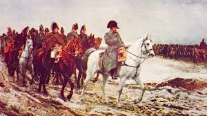
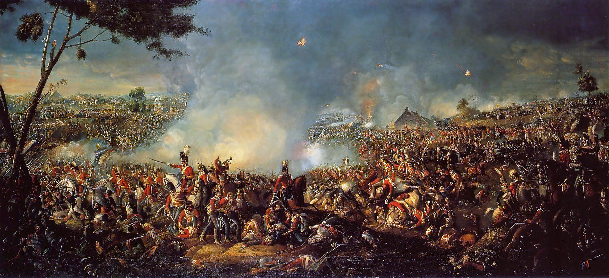

Война за независимость США
Американские колонии боролись за независимость от Британской империи. Зимой армия Вашингтона пересекла реку Делавэр в тяжёлых погодных условиях. Холод и снег не остановили солдат, что позволило провести неожиданную атаку. Этот манёвр стал важным поворотным моментом в войне.

Наполеон в России (1812)
Французская армия вторглась в Россию с огромными силами и уверенной победой в планах. Однако суровая русская зима изменила ход всей кампании. Морозы уничтожали солдат, лошадей и технику, лишая армию боеспособности. В результате поход закончился катастрофическим поражением Наполеона.

Испанская армада
Испания отправила огромный флот для нападения на Англию. Однако сильные штормы в Атлантике разрушили большую часть кораблей. Плохие погодные условия сделали невозможным выполнение военного плана. Это стало одним из самых известных поражений морской истории.

Битва при Ватерлоо
Последняя битва Наполеона проходила в тяжёлых погодных условиях. Дождь превратил поле боя в грязь, что замедлило движение войск. Артиллерия и кавалерия не могли действовать эффективно. Это повлияло на итоговое поражение Наполеона.